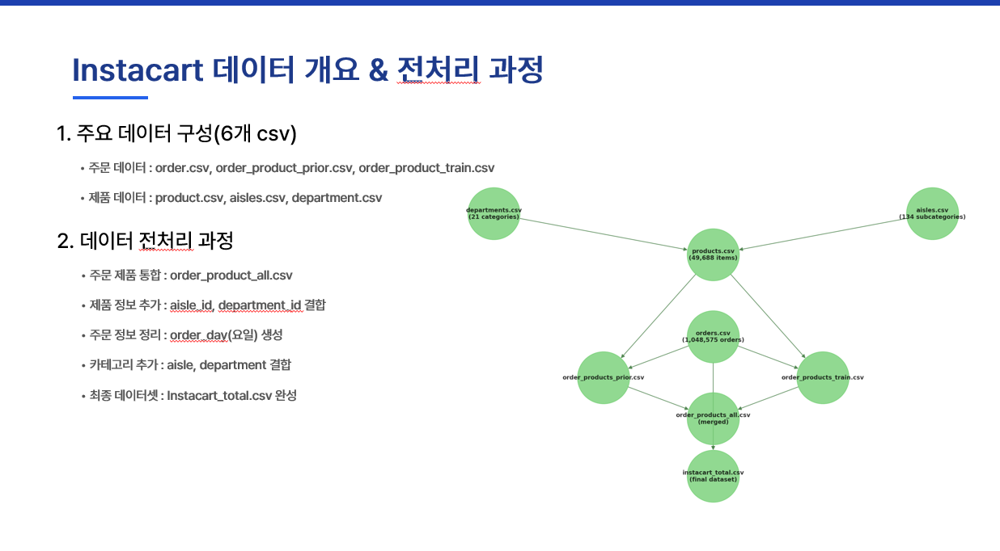
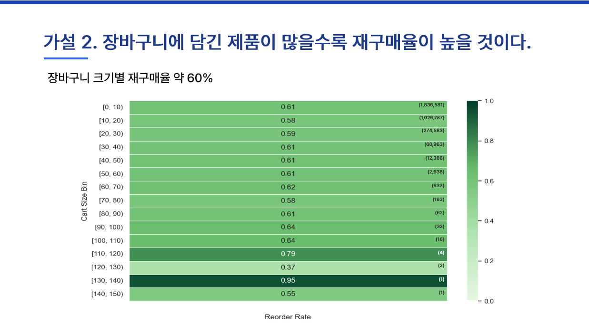

Project 2: Instacart 고객 재구매율 증대를 위한 맞춤형 마케팅 전략 수립
1. 문제 정의: 편리함만으로는 충분하지 않다
"Instacart는 바쁜 현대인들에게 '시간'이라는 소중한 가치를 선물했습니다. 하지만 편리함만으로는 치열한 경쟁 속에서 지속적인 성장을 담보하기 어렵습니다."
Instacart는 편리한 식료품 배송 서비스로 빠르게 성장했지만, 그 이면에는 중요한 비즈니스 과제가 숨어있었습니다. 분석 결과, Instacart 고객들은 '대량 구매'보다는 '소량 반복 구매'를 선호하는 뚜렷한 패턴을 보였습니다. 이는 고객 한 명 한 명의 충성도를 확보하고 재구매를 유도(Retention)하는 것이 비즈니스 성장의 핵심임을 의미합니다.
이 프로젝트는 고객이 남긴 수많은 장바구니 데이터 속에서 그들의 취향, 구매 주기, 선호 상품 등의 패턴을 분석하여 '어떻게 하면 고객이 우리 서비스를 계속 이용하게 만들까?'라는 근본적인 질문에 답을 찾는 것을 목표로 합니다.
핵심 질문:
- 수많은 고객 중, 우리의 마케팅 노력에 가장 잘 반응할 '핵심 고객'은 누구인가?
- 고객의 구매 패턴을 어떻게 활용하여 그들의 이탈을 막고 재구매를 유도할 수 있을까?
2. 분석 과정 및 역할
저는 흩어져 있는 원본 데이터에서부터 최종 마케팅 전략까지, 데이터 기반 의사결정의 전 과정을 주도했습니다.
Step 1. SQL을 활용한 대규모 데이터 통합 및 정제
분석의 첫걸음은 분산된 데이터를 하나의 의미 있는 테이블로 만드는 것이었습니다.
- 데이터 통합: orders, products, departments 등 6개의 개별 CSV 파일에 흩어져 있던 100만 건 이상의 주문 데이터를 SQL JOIN 구문을 사용해 통합했습니다. 이 과정을 통해 고객의 주문 정보와 상품 정보를 연결한 포괄적인 분석 기반을 마련했습니다.
- 데이터 정제 및 파생 변수 생성: 분석 목적에 맞게 order_day(주문 요일)와 같은 파생 변수를 생성하고, aisle 및 department 정보를 결합하여 제품 카테고리를 명확히 했습니다. 모든 데이터의 결측치 처리와 정상 병합을 확인하여 데이터의 정합성을 확보했습니다.

Step 2. 가설 기반의 탐색적 데이터 분석 (EDA)
고객 행동에 대한 가설을 세우고 데이터를 통해 검증하며 비즈니스에 대한 이해를 높였습니다.
- 가설 수립 및 검증:
- 가설 1: 재구매율이 높은 특정 제품군이 있을 것이다.
- 검증: 제품 카테고리별 재구매율을 시각화한 결과, 유제품/계란, 음료, 신선 농산물 등 '신선식품(Fresh Foods)'의 재구매율이 압도적으로 높음을 확인했습니다. 이는 Instacart 비즈니스의 핵심이 신선식품에 있음을 시사하는 중요한 발견이었습니다.
- 가설 2: 장바구니에 담긴 제품이 많을수록 재구매율이 높을 것이다.
- 검증: 장바구니 크기별 재구매율을 분석한 결과, 가설과 달리 장바구니 크기와 재구매율 사이에는 뚜렷한 상관관계가 없었으며, 오히려 대부분의 고객이 10개 미만의 상품을 구매하는 '소량 구매' 패턴을 보였습니다. 이는 '많이 사는 고객'보다 '자주 사는 고객'이 더 중요할 수 있다는 인사이트를 제공했습니다.

Step 3. RFM 분석을 통한 정교한 고객 세분화
모든 고객을 동일하게 취급하는 대신, 고객의 가치와 행동 패턴에 따라 그룹화하여 차별화된 전략의 기반을 마련했습니다.
- RFM 모델 적용: 고객 가치 분석의 고전적이고 강력한 기법인 RFM 모델을 적용했습니다.
- R(Recency): 마지막 주문 이후 얼마나 지났는가? (최근성)
- F(Frequency): 얼마나 자주 주문했는가? (주문 빈도)
- M(Monetary): 평균 장바구니 크기는 얼마인가? (주문량)
- 4개의 핵심 고객 그룹 정의: 파레토 법칙(80:20)과 RFM 점수 분포를 고려하여 전체 고객을 4개의 전략적 그룹으로 분류했습니다.
- 우수 고객 (Top 0.7%): 최근에, 자주, 많이 구매하는 충성 고객.
- 잠재 고객 (38.0%): 구매 빈도와 규모가 꾸준한, 우수 고객으로 성장할 가능성이 높은 그룹.
- 관심 필요 고객 (54.1%): 가장 큰 비중을 차지하지만 최근 구매가 줄어든, 이탈 가능성이 있는 핵심 관리 대상.
- 이탈 위험 고객 (7.2%): 오랫동안 구매가 없고 빈도도 낮은, 휴면/이탈 직전의 고객.
- 핵심 발견: 분석 결과, 소위 '충성 고객'인 '우수 고객'은 단 0.7%에 불과했으며, 가장 큰 비중을 차지하는 그룹(54.1%)은 바로 '관심 필요 고객'이었습니다. 이는 Instacart 성장의 열쇠가 소수의 VIP를 관리하는 것뿐만 아니라, 거대한 '관심 필요 고객' 그룹을 어떻게 다시 활성화시키고 '잠재 고객'으로 전환시키느냐에 달려있음을 명확히 보여주었습니다.
Step 4. 데이터에 기반한 맞춤형 마케팅 전략 제안
분석 결과를 바탕으로, 각 고객 그룹의 특성에 맞는 구체적이고 실행 가능한 마케팅 액션 플랜을 설계했습니다.
- "고객 맞춤형 전략":
- 관심 필요 고객 (54.1%) 대상: 이들의 주된 구매 품목이 '신선식품'이라는 점과 '소량 반복 구매' 패턴을 연결했습니다. 재방문을 유도하고 구매를 활성화하기 위해 '신선식품 정기배송 구독 모델'을 제안하여 고객을 서비스에 Lock-in시키는 전략을 설계했습니다. (예: 반복 구매 상품 탐색 시 정기배송 팝업 노출 → 구독 시 할인 혜택)
- 우수 고객 (0.7%) 대상: 충성도를 유지하고 더 큰 가치를 창출하도록 'VIP 멤버십 혜택' (예: 전용 할인, 무료 배송) 및 기업 고객 제도를 제안했습니다.
- 이탈 위험 고객 (7.2%) 대상:고객의 이탈을 막고 다시 서비스를 이용하도록 유도하기 위해 '웰컴백 리워드' (예: 다음 구매 시 10% 할인 쿠폰)를 제안했습니다.